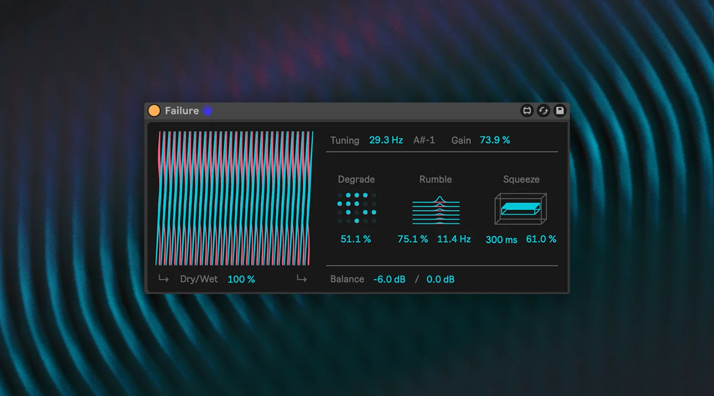
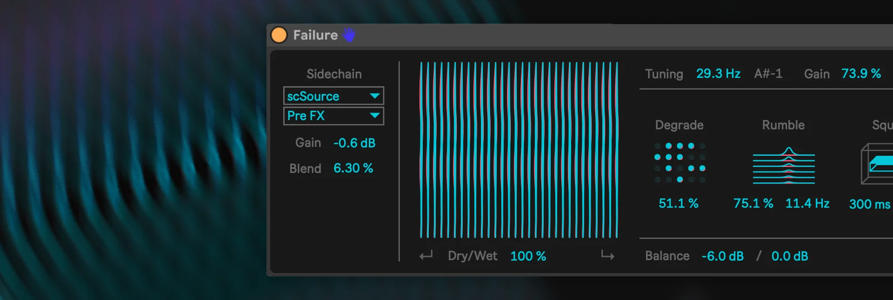

Failure is our attempt to model overload bass.
Not simply the hyping of overtones, phase tricks, or even/odd distortion.
We are chasing the particular feeling that comes with perceived loudness; the synesthetic shuddering of sound as it
pushes against the limits of the recording medium. This can be used as a barely-there buttress creating a simmering
loudening enhancement minus extra lufs, or all the way to heavy-handed have eyeballs rattling.
As it is a perceived effect we've created a perceptual Moiré pattern that is Failure sensitive, encoded with feedback
from the parameters to give immediate visual sense of this unique efx.
We suggest you use it on the master, as a send, multiples on individual tracks, buses, side chained to kick-y things,
creating sound designed mayhem, or simply as a visual interpolation.
Don't just produce, please Failure gloriously!

Minimum Requirements:
Ableton Live 10, 11 & 12 Suite or Standard with Max for Live installed.